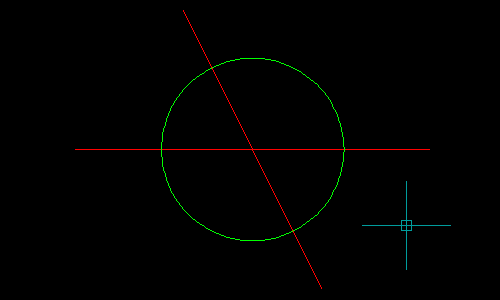
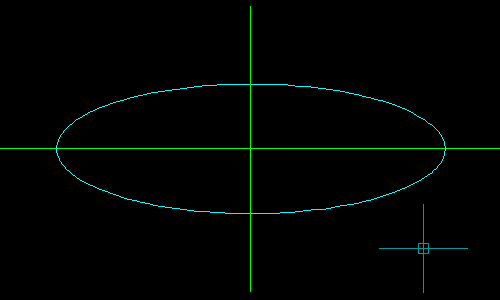

Length Between Intersections
This page is delivered for consistency purposes only, as part of the LeeMac sample module of DynALisp, which shows how DynALisp turns existing AutoLISP programs into a module. The program and its description are the work of Lee Mac, who keeps all the credit for them. The original page, with the latest version, is on Lee Mac's website: https://lee-mac.com/intersectionslength.html
| Function Syntax | LM-LengthBetweenIntersections – original syntax: IntLen / IntLenM (see aliases) |
| Current Version | 1.4 |
| Compatible with AutoCAD for Mac? | No |
| Compatible with AutoCAD LT? | Yes |
| Original Page | lee-mac.com/intersectionslength.html |
Program Description
This program will display the length of segments of a curve divided at points of intersection with other objects.
The program may be called at the AutoCAD command line with the syntax: IntLen for single selection, or IntLenM for multiple object selection.
Following selection, the length of segments of the curve between intersections with surrounding objects is displayed with a text object at the midpoint of each segment, rotated to align with the segment.
If no intersections are found, the length of the selected curve is displayed at its midpoint.
Examples of Usage


Bundled program notes
;;-------------=={ Length Between Intersections }==-----------;;
;; ;;
;; Displays the length of segments of a curve divided at ;;
;; intersections with other objects. ;;
;;------------------------------------------------------------;;
;; Author: Lee Mac, Copyright © 2011 - www.lee-mac.com ;;
;;------------------------------------------------------------;;
;; Version 1.4 - 26-04-2011 ;;
;;------------------------------------------------------------;;
Command Names And Aliases
As in every DynALisp module, each program of this sample module has one main command, named LM-*, and the original command names of Lee Mac's page are kept as its aliases: they run the same command, and can be added, renamed or removed in Dyl-Suite (saved in Resources\Aliases.csv). The rows marked ↳ are child commands of LM-LengthBetweenIntersections: they are run by their alias, or picked from LM-LengthBetweenIntersections when it lists them (their command is named Pst-*).
| Command | Aliases | Name |
|---|---|---|
| LM-LengthBetweenIntersections | INTLEN | Length Between Intersections |
| ↳ INTLENM | – | Length Between Intersections Multiple |